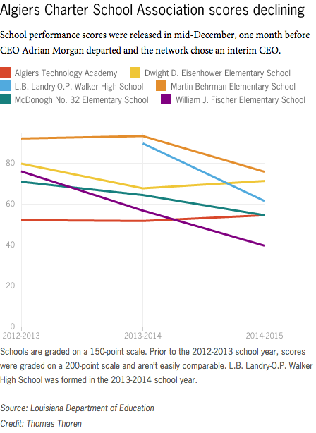

Algiers Charter School Association scores declining
School performance scores were released in mid-December, one month before CEO Adrian Morgan departed and the network chose an interim CEO.

Schools are graded on a 150-point scale. Prior to the 2012-2013 school year, scores were graded on a 200-point scale and aren’t easily comparable. L.B. Landry-O.P. Walker High School was formed in the 2013-2014 school year.